Assumptions are ok.
There is no interaction or significant differences.
There is no convincing evidence in this essay to affirm that the fruit of the ubajay is climacteric.
No existen evidencias para rechazar la hipótesis nula.
## mean min max sd
## 1 63.819421 48.0793481 73.5247655 6.05684457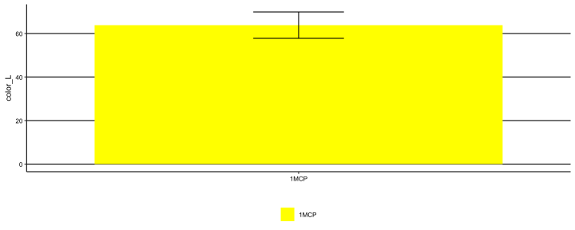
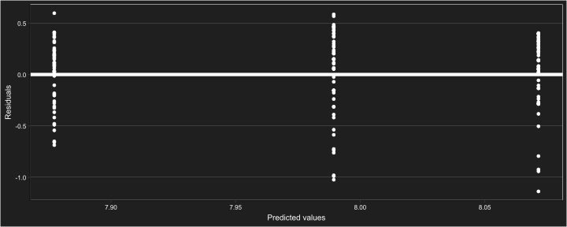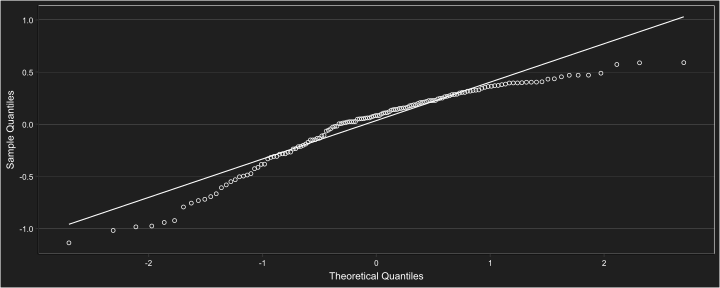
##
## Shapiro-Wilk normality test
##
## data: e
## W = 0.9233983, p-value = 0.000000559229## Denom. DF: 141
## numDF F-value p-value
## (Intercept) 1 67786.2625 <.0001
## treat 2 3.8849 0.0228##
## Dunnett's test for comparing several treatments with a control :
## 95% family-wise confidence level
##
## $control
## diff lwr.ci upr.ci pval
## etileno-control 1.26108561 -1.45696298 3.979134202 0.4800
## 1MCP-control -1.87518628 -4.59323487 0.842862312 0.2167
##
## ---
## Signif. codes: 0 '***' 0.001 '**' 0.01 '*' 0.05 '.' 0.1 ' ' 1## $emmeans
## treat emmean SE df lower.CL upper.CL
## control 7.98938702 0.0642164475 46.92 7.86019469 8.11857934
## etileno 8.07153729 0.0536919080 47.06 7.96352703 8.17954756
## 1MCP 7.87723258 0.0456959986 46.99 7.78530358 7.96916159
##
## Degrees-of-freedom method: satterthwaite
## Results are given on the sqrt (not the response) scale.
## Confidence level used: 0.95
##
## $contrasts
## contrast estimate SE df t.ratio p.value
## control - etileno -0.0821502769 0.0837052753 91.09 -0.981 0.5904
## control - 1MCP 0.1121544354 0.0788154579 84.89 1.423 0.3337
## etileno - 1MCP 0.1943047124 0.0705049308 91.60 2.756 0.0192
##
## Note: contrasts are still on the sqrt scale
## Degrees-of-freedom method: satterthwaite
## P value adjustment: tukey method for comparing a family of 3 estimates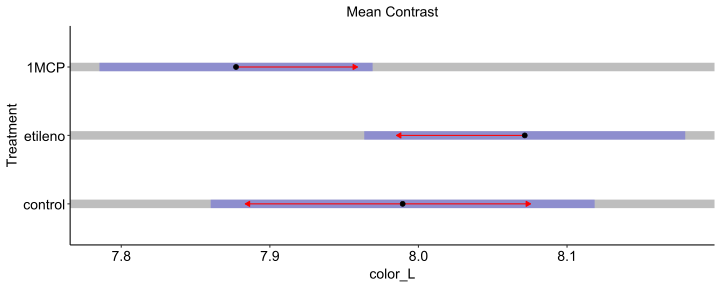
## mean min max sd
## 1 102.179255 65.2194586 139.935557 19.689997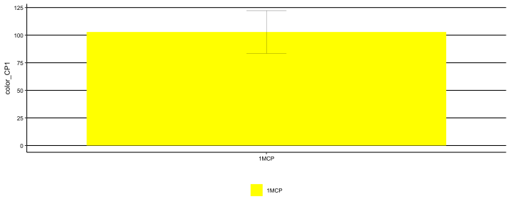
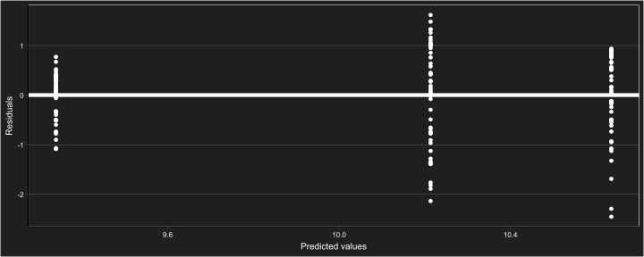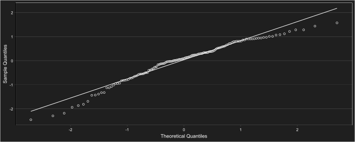
##
## Shapiro-Wilk normality test
##
## data: e
## W = 0.9673159, p-value = 0.00162644## Denom. DF: 141
## numDF F-value p-value
## (Intercept) 1 32944.5364 <.0001
## treat 2 50.5957 <.0001##
## Dunnett's test for comparing several treatments with a control :
## 95% family-wise confidence level
##
## $control
## diff lwr.ci upr.ci pval
## etileno-control 8.43032146 0.964919804 15.8957231 0.0240 *
## 1MCP-control -18.11997804 -25.585379699 -10.6545764 0.00000049 ***
##
## ---
## Signif. codes: 0 '***' 0.001 '**' 0.01 '*' 0.05 '.' 0.1 ' ' 1## $emmeans
## treat emmean SE df lower.CL upper.CL
## control 10.21643773 0.1482911512 47.15 9.91813937 10.51473609
## etileno 10.63543129 0.1243761630 47.04 10.38522409 10.88563848
## 1MCP 9.33242299 0.0644193392 47.00 9.20282809 9.46201789
##
## Degrees-of-freedom method: satterthwaite
## Results are given on the sqrt (not the response) scale.
## Confidence level used: 0.95
##
## $contrasts
## contrast estimate SE df t.ratio p.value
## control - etileno -0.418993556 0.193545073 91.34 -2.165 0.0828
## control - 1MCP 0.884014740 0.161679055 64.32 5.468 <.0001
## etileno - 1MCP 1.303008296 0.140068845 70.58 9.303 <.0001
##
## Note: contrasts are still on the sqrt scale
## Degrees-of-freedom method: satterthwaite
## P value adjustment: tukey method for comparing a family of 3 estimates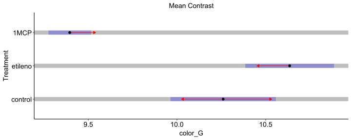
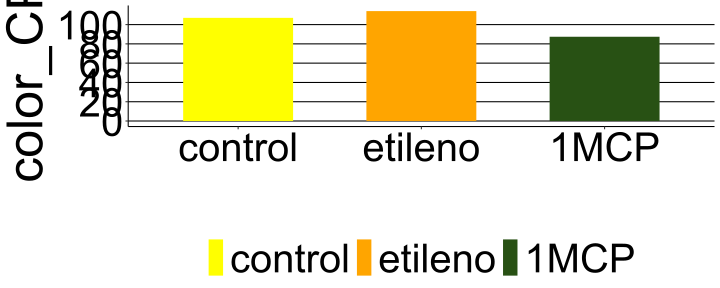
## [1] 0.490794623## [1] 0.647552181## [1] 0.794976335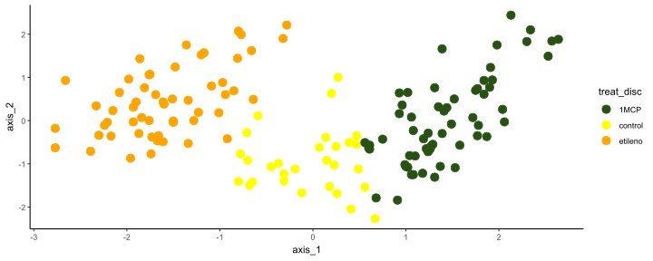
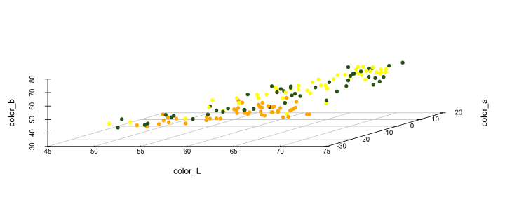